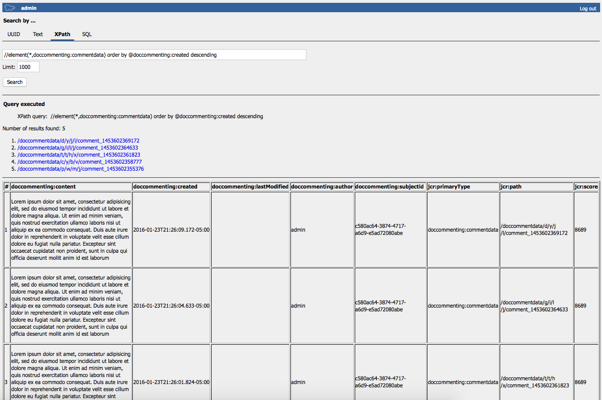
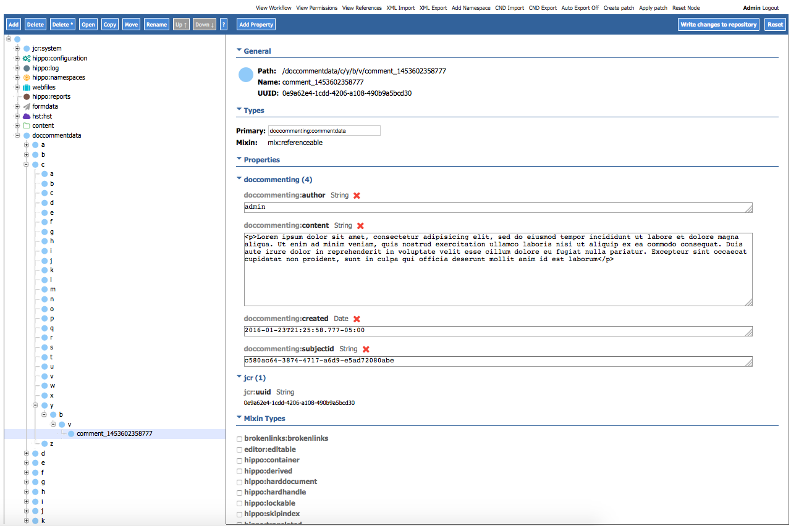

The default implementation of CommentPersistenceManager, DefaultJcrCommentPersistenceManager, stores comment data in JCR repository in a specific node tree, similarly to how Hippo Workflow logging data or HST Form data is stored.
DefaultJcrCommentPersistenceManager uses the following node types:
<'mix'='http://www.jcp.org/jcr/mix/1.0'>
<'nt'='http://www.jcp.org/jcr/nt/1.0'>
<'doccommenting'='http://forge.onehippo.org/doccommenting/nt/1.0'>
[doccommenting:commentdata] > nt:base
- doccommenting:subjectid (string)
- doccommenting:author (string)
- doccommenting:created (date)
- doccommenting:lastModified (date)
- doccommenting:content (string)
- * (string)
- * (string) multiple
- * (boolean)
- * (boolean) multiple
- * (long)
- * (long) multiple
- * (double)
- * (double) multiple
- * (date)
- * (date) multiple
[doccommenting:commentdatacontainer] > nt:base
+ * (doccommenting:commentdata)
+ * (doccommenting:commentdatacontainer)
doccommenting:commentdatacontainer type is used for folder nodes (which are randomly created and selected for scalability) and doccommenting:commentdata is used for each comment data node.
Please note that a doccommenting:commentdata has basic properties:
In addition, for more extensibility/customizability, a doccommenting:commentdata node allows to store any ad hoc single-valued or multi-valued properties in different types (string, boolean, long, double and date).
You can find an example which takes advantage of this here:
One of the easiest way to look up the comment data is to use the Hippo CMS Repository Servlet (/cms/repository). So, you can execute query like the following example to search comment data:
It will show all the values of the default properties together in the result view.
You can also browse the data by the path in CMS Console like the following. CMS Console will show all the properties (not just the basic properties but also any custom/extended properties if you have any).
As you can see, it creates 26 folders from 'a' to 'z' in 4 levels initially and stores a comment node after selecting a fourth-level folder randomly. This way, it can store a lot of data in a more performant and scalable way.